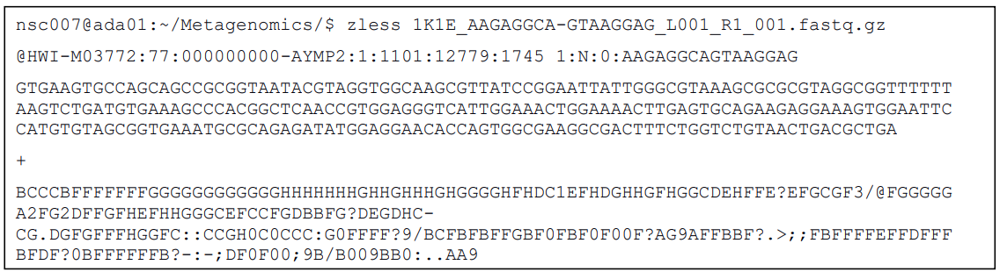

In the following parts of the practical exercise, descriptions of commands will be marked by hash character, #, these lines should not be typed in the terminal. e.g.
Commands directed to the bash terminal will be in red. e.g.
Run the commands one after the other, from the command line.
When a command’s length exceeds the width of the line available in the paragraph, the convention used in this document is to represent the ‘incompleteness of the command in the first line’ by ending it with a \ sign. You may choose to split the command onto more than one line using this method in the shell or you may type the second line of the command straight after the first. In the former case, after typing the \ and pressing ENTER, the prompt will show a > sign indicating it is waiting for more command. This prompt > is NOT reported in the command you have to type, so in any case this document showing a command line starting with the > sign please be careful to type it.
Accessing the data and navigating the command line.
In Unix, everything works via commands on the command line. Also, the Unix environment consists of directories which may contain other directories and/or files. At any one time you are in a directory, which is within another directory and so on, and there are directories ‘below’ you, which you can move into. When you type pwd, you see the full path to your location, or “working directory” (e.g. /pub39/tea/luca/Metagenetics_2019). The directories are separated by “/.” The initial “/” is the root directory (the directory that contains everything else). When you first log in, you are in your home, the directory containing all the files and directories that you create. To make a directory, move into it, see where you are, what else is there and move up out of it, try these commands.
mkdir adirectory
cd adirectory
pwd
ls
cd ..
ls
rm –r adirectory
Here, cd changes your directory (.. means “jump up a level”) and ls lists the files and directories you can see (the -l option gives more information about each file/dir). You can delete a file or directory using the rm command, adding the -r option for a directory. Use these until you are comfortable navigating around.
Now you need to obtain the raw data you will be analysing in this workshop. Create a main directory for the workshop and copy the directory of workshop data from its location (/pub39/tea/luca/Metagenetics_2019/RawReads) to your directory (.) using the cp command. The -r option allows you to copy an entire directory.
cd ~
mkdir Metagenetics
cp -r ~luca/Metagenetics_2019/RawReads ./Metagenetics/RawReads
cp ~luca/Metagenetics_2019/PairedEndFastqManifestPhred33.csv \
./Metagenetics
cp ~luca/Metagenetics_2019/metadata.file.txt \
./Metagenetics
Take a look at the data files
ls -l Metagenetics/RawReads
Now navigate into the directory, where you will do the analyses
Now you will explore the data you are going to analyse.
It is important to get a feel for the data and how it should and shouldn’t look. If the data were generated by Illumina (HiSeq or MiSeq), they will be in fastq format, a text format that can be easily viewed. If the data are Illumina (HiSeq or MiSeq) and were generated by the CGR, these are the raw files which are already demutliplexed using the software CASAVA but were NOT postprocessed to remove adapter sequences and low-quality bases (as per standard protocol prior to
most analysis).
If your data is paired-end (MiSeq data will be), then each sample has two data files. E.g.:
- 1K1E_AAGAGGCA-GTAAGGAG_L001_R1_001.fastq.gz
- 1K1E_AAGAGGCA-GTAAGGAG_L001_R2_001.fastq.gz
In this case, the names denote sample 1, barcode AAGAGGCA-GTAAGGAG, lane 1 (L001), forward reads (R1) or reverse reads (R2), file 1 (001). Files are in fastq format and are often compressed with gzip (.gz).
Files are typically very large. Hence you must be careful to handle them in the right way. They are usually too large to simply open in a text editor, so don’t try. Instead, you should use Unix commands and scripts to manipulate them. Ensure the Illumina reads are in fastq format by having a look. To view the top of the file, use the head command (tail is an equivalent command which lets you view the end of a file, while less and more allow you to scroll through the file). In here we will use the zless command which is able to open files compressed with gzip.
zless RawReads/1K1E_AAGAGGCA-GTAAGGAG_L001_R1_001.fastq.gz
Notice that each read is represented by 4 lines:

The first line is the read identifier. The second line is the sequence, and the fourth line is the quality score for this sequence. Qualities are in ASCII codes (in which a symbol represents a number: in this case the quality of the basecall).
Note that the barcode sequence is displayed in the read header (but it may contain Ns).
At this stage, you can get some information about your data. For instance, how many reads do you have? We can use the grep command to find every match to the pattern ^+$ (^=start of line, $=end of line, so match a line with a single + on it). There is only one line like this per read so the number of matches = the number of reads. The -c option makes grep return the count of the number of matches (rather than the matches themselves).
zgrep -c “^+$” 1K1E_AAGAGGCA-GTAAGGAG_L001_R1_001.fastq.gz
You should obtain:
~/Metagenomics/RawReads$ zgrep -c “^+$”1K1E_AAGAGGCA-GTAAGGAG_L001_R1_001.fastq.gz
#result = 53731